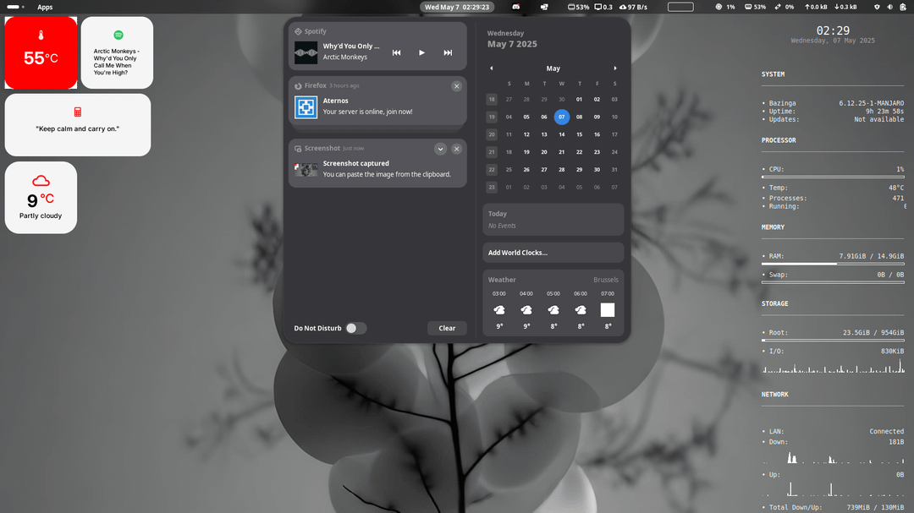
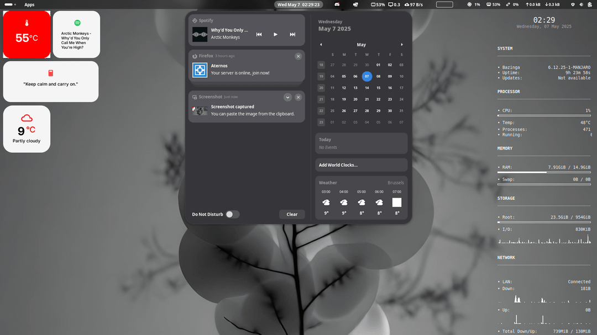

Nothing OS GNOME
UI/UX Design & Development
2025
Overview
This is a NothingOS-inspired desktop build for Manjaro Linux (GNOME edition). It's designed to bring the clean, monochrome aesthetic of Nothing's design philosophy to the Linux desktop — with polished widgets, blurred transparency, and a cohesive theme setup.
Screenshots & Mockups
 

Process
Research
- Explored UI/UX customization on Linux by designing a bespoke GNOME Shell and GTK theme inspired by Nothing’s minimalist design language.
- Studied Nothing’s visual identity: monochrome palette, dot-matrix typography, transparent industrial aesthetics.
- Planned custom GNOME Shell and GTK themes, icon set, and wallpaper concepts for a unified look.
Design
- Translated industrial-minimalist identity into a functional desktop experience.
- Integrated monochrome tones, transparency, clean grids, and dot-matrix typography.
- Used glowing white accents, pixel-grid layouts, and minimal iconography for clarity and cohesion.
- Ensured consistency across all UI elements and prioritized readability and usability.
- Built the theme modularly for easy adoption and compatibility with GNOME Tweaks.
Development
- Configured Manjaro GNOME with development tools (gnome-shell-extension-tool, gnome-tweaks, sassc, glib-compile-resources).
- Created modular theme directories and structured assets for easy installation.
- Customized gnome-shell.css for top bar, system dialogs, notifications, and overview.
- Applied monochrome palettes, dot-matrix typography, and glass-like transparency.
- Styled GTK widgets, buttons, sliders, and menus to match the shell theme.
- Adapted Papirus/Line-style icons into a minimalist wireframe set and designed wallpapers.
- Customized GNOME Terminal with transparency and monochrome color schemes; integrated Starship prompt.
Outcome
- Delivered a fully functional Nothing-inspired GNOME Shell and GTK theme.
- Key Features:
- Custom GNOME Shell theme with redesigned top bar, notifications, and overview.
- Matching GTK theme for consistent application and window styling.
- Minimalist icon set and wallpaper concepts aligned with Nothing’s visual identity.
- Dot-matrix typography integrated into system UI and terminal.
- Transparent GNOME Terminal and futuristic Starship-powered shell prompt.
- Modular installation for individual components (shell, GTK, icons).
- Results & Reception:
- Gained 20+ stars on GitHub, showing early community recognition and adoption.
- Positive feedback for clean design, usability, and originality.
- Demand from Linux users seeking Nothing-inspired customization and minimalism.
- Established a foundation for future growth and broader distribution.
Tools & Technologies
- Linux
- Eww
- Alacritty
- Conky
- Papirus Icons
- GNOME OS setup